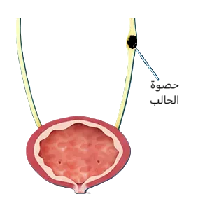

حصوة الحالب - حصى الحالب
مقدمة عن حصى الحالب
لا يتم الحديث كثيراً عن حصى الحالب و ذلك لأن ما يلفت الإنتباه دائماً هي حصى الكلى؛ ولأن مرور حصوة للحالب أو أحياناً عدة حصى هو مرتبط ارتباط وثيق مع حصى الكلى الصغيرة والقادرة على المرور للحالب أو نتيجة علاج حصى الكلى؛ مثل تفتيت حصى الكلى بالموجات الصادمة، واللذي قد ينتج عنه حصى صغيرة تمر في الحالب.
إذاً في الغالب، تكون حصى الحالب نتيجة لوجود حصى الكلى. وهذا صحيح في أغلب الحالات. الا في حالات نادرة قد تتكون حصوة الحالب في الحالب نفسه، وقد تصل لأحجام كبيرة جداً في هذه الحالة.
لكن ما الفرق بين حصى الحالب و حصى الكلى؟ وبما أن حصى الحالب غالباً ما تنتج عن حصى الكلى فلم يتم تناول موضوع حصى الحالب بشكل منفصل؟
في الأصل عند علاج حصى الكلى فإن الهدف يكون إما استخراج الحصى بشكل كامل كما في حال عملية بزل حصى الكلى عن طريق الجلد؛ أو عن طريق تفتيت حصى الكلى الى رمل وقطع صغيرة جداً، كما في عملية المنظار المرن أو التفتيت بالموجات الصادمة، وهنا يتوجب على الرمل و قطع الحصى الصغيرة المرور بشكل كامل من الحالب وصولاً للمثانة ثم الى الخارج.
لكن ليس دائماً ما تسير الأمور بالشكل المطلوب. فعند مرور حصى ذات حجم أكبر أو عند وجود تضيق في الحالب تنتج مشكلة حصى الحالب والتي تتميز باحتمالية حدوث الألم الشديد في الخاصرة والمعروف بالمغص الكلوي. واحتمال انسداد الحالب وبالتالي انسداد الكلية والذي قد يؤدي الى تلف الكلية في حال عدم فتح الطريق بأي اجراء سريع.
أما في حال بقاء حصى الحالب في الحالب دون أعراض فالمشكلة أكبر. حيث قد تستمر حصوة الحالب بالازدياد بالحجم والتسبب في انسداد مزمن في الحالب وتلف الكلية بشكل بطيء وغير محسوس.
مواضيع ذات صلة:-
معلومات شاملة عن حصى الكلى / عملية المنظار المرن في حصى الكلى / المغص الكلويما هي حصى الحالب؟ الفرق بين حصى الحالب وحصى الكلى
كثيراً ما يتم استخدام مصلح حصى الكلى للدلالة على حصى الكلى بحد ذاتها أو للدلالة على حصى المسالك البولية بشكل عام خصوصاً حصى المسالك البولية العلوية والتي تشتمل على حصى الحالبين.
تعتبر حصى المسالك البولية مرضًا شائعًا بشكل كبير على مستوى العالم، على الرغم من الاختلاف الملحوظ في معدل حدوثه بناءً على عوامل مختلفة مثل الجنس والمناخ والنظام الغذائي وعوامل الخطر الأخرى. هذا بالإضافة الى أن هناك زيادة سنوية في انتشار حدوث حصى المسالك البوليه لدى الأشخاص الذين تزيد أعمارهم عن ثلاثين عامًا لكلى الجنسين.
وهذا الانتشار الكبير والازدياد في الحدوث يجعل مشكلة حصى الكلى وحصى المسالك البولية محط إهتمام دولي وقد ظهر ذلك من خلال نشر إرشادات شاملة حول حصى المسالك البولية من قبل العديد من المعاهد المتميزة في جميع أنحاء العالم.
وفي حين أن الفسيولوجيا المرضية الدقيقة لتكوين الحصى غير واضحة، فإن الخطوة الحاسمة الأولية هي تشبع البول بمكونات الحصى. ثم نمو هذه المكونات على شكل بلورات صغيرة ثم الاستمرار في النمو لتكوين حصى أكبر.
ومع تزايد انتشار حصى الكلى وحصى المسالك البولية وبالتالي حصى الحوالب، يزداد التأثير الضار على الصحة العالمية ونوعية الحياة. حيث يعاني مرضى حصى الكلى وحصى الحالب من آلام شديدة متكررة مثل المغص الكلوي وزيارات طبية متكررة تعطل الحياة اليومية والعمل والوقت المخصص للعائلة والنوم.
علاوة على ذلك، ترتبط حصى الكلى بأمراض الكلى المزمنة، حيث تُعزى الآلية في المقام الأول إلى اعتلال المسالك البولية الانسدادي أو التهاب الحويضة والكلية. كما يمكن أن تزيد من خطر الإصابة بمرض الكلى في مرحلته النهائية أو الفشل الكلوي، والأمراض القلبية الوعائية وتصلب الشرايين، والوفيات ذات الإرتباط بالحصى.
أعراض حصى الحالب - حصوة الحالب
تتراوح أعراض حصى الحالب من الألم في الخاصرة أو المغص الكلوي الى آلام في منطقة أسفل الظهر، والقيء، وأحيانًا الحمى، ولكن قد يكونون أيضًا بدون أعراض.
طرق تشخيص حصى الحالب - أحدث التقنيات
تشخيص حصى الحالب ذات الأعراض الخفيفة أو منعدمة الأعراض
أوصت جمعية الكلى والمسالك البولية الأوروبية باستخدام الموجات فوق الصوتية -الألتراساوند - كفحص أولي للمرضى الذين لا تظهر عليهم أعراض لأنها آمنة وأقل تكلفة ويمكنها تحديد استسقاء الكلية وحصى الكلى في كؤوس الكلى والحوض والوصلات الحوضية الحالبية والمثانية الحالبية.
هذا على الرغم من أن الألتراساوند لا يتمكن من رؤية الحالب بشكل عام، لكن فوائده في تحديد وجود توسع في حوض الكلية من عدمه - وهو ما يسمى باستسقاء الكلية، بالإضافة لتمكنه من تشخيص حصى الكلى خاصة اذا كانت كبيرة، مع عدم وجود عرضة للأشعة بالاضافة لسهولة استخدامه وتوفره بشكل كبير. كل هذا أبقى التشخيص باستخدام الألتراساوند في حالات الاشتباه بحصى الكلى والمسالك البولية في المراتب الأولى.
ومن الصور التشخيصية لحصى الحالب خاصةً وحصى الكلى والمسالك البولية بشكل عام هي صورة الأشعة السينية للكلى والحالبين والمثانة - XR-KUB - حيث عادة ما يتم طلب هذه الصورة مع التصوير بالألتراساوند، جنباً الى جنب. ومن ايجابياتها تحديد ما اذا كانت حصى المسالك البولية شفافة أم لا. و من أهم ايجابياتها أيضاً المساعدة في متابعة العلاج والاستجابة للتفتيت، خاصة التفتيت بالموجات الصادمة.
تشخيص حصى الحالب في حال وجود المغص الكلوي او الحالات الطارئة
لقد أصبح التصوير المقطعي الطبقي من غير مادة ملونة هو المعيار لتشخيص آلام الخاصرة الحادة - المغص الكلوي - وحل محل التصوير الوريدي للمسالك البولية (IVU). يمكن للتصوير الطبقي المحوسب للمسالك البولية تحديد موقع حصى الكلى والمسالك البولية - حصى الحالب في هذه الحالة - وحجمها وكثافتها. كما وعندما لا توجد حصى، يتم تحديد سبب الآلام الشديدة في الخاصرة أو البطن. في تقييم المرضى الذين يشتبه في إصابتهم بحصى بولية حادة، يكون التصوير الطبقي أكثر دقة بشكل ملحوظ من التصوير الوريدي للمسالك البولية أو الموجات فوق الصوتية.
كما ويتمكن التصوير الطبقي من تشخيص غالبية حصى المسالك البولية الشفافة. ويعطي معلومات عن الكلى و الحالبين والحصى مثل كثافتها وأبعادها والمسافة بين حصى المسالك البولية والجلد، وكل هذا يساعد في تحديد العلاج الأفضل لحصى الكلى والمسالك البولية والعلاج الأفضل لحصى الحالب بشكل خاص.
تشخيص حصوة الحالب - حصى الحالب خلال الحمل
قد يسبب التعرض للإشعاع - التصوير الطبقي أو الأشعة السينية - لدى النساء الحوامل تأثيرات غير عشوائية (تشوهات خلقية) أو عشوائية (سرطان، طفرة). يزداد احتمال حدوث التشوهات الخلقية مع زيادة جرعات الأشعة وتتطلب جرعة حدية (أقل من 50 ملي جراي تعتبر آمنة) وتعتمد على عمر الحمل (تكون المخاطر أقل قبل الأسبوع الثامن وبعد الأسبوع الثالث والعشرين). و تزداد حالات السرطنة والطفرات سوءًا مع زيادة الجرعة ولكنها لا تتطلب حدًا أدنى للجرعة ولا تعتمد على عمر الحمل، لكنها تحتاج لجرعة عالية من الأشعة - أي أعلى من التصوير الشعاعي بالأشعة السينية.
ولأن حصى الحالب تحتمل صعوبات في التشخيص في حال عدم التمكن من إجراء التصوير الطبقي الإعتيادي؛ خاصةً في حالات المغص الكلوي الشديد، لذلك تتفق الجمعيات والمنظمات العلمية العالمية على سلامة التقييم التشخيصي عندما يتم استخدام الموجات فوق الصوتية والتصوير بالأشعة السينية والتصوير بالرنين المغناطيسي حسب الحاجة. أي لا ينبغي منع إجراء التصوير الشعاعي عن المرأة الحامل إذا كان الإجراء ضروريًا بشكل واضح وكان القيام بذلك سيؤثر على رعايتها الطبية.
وعلى الرغم من أمان استخدام التصوير بالرنين المغناطيسي، كخيار ثانوي، لتحديد مستوى انسداد المسالك البولية، وتوقع وجود حصى الحالب كجسم يملأ داخل الحالب الا أن الرنين المغناطيسي ليس دقيقاً في تشخيص حصى الحالب مثل التصوير الطبقي.
اذاً بالنسبة للكشف عن حصى الكلى والمسالك البولية - تحديداً حصى الحالب - أثناء الحمل، يرتبط التصوير الطبقي منخفض الجرعة الشعاعية بقيمة تنبؤية إيجابية أعلى (95.8%)، مقارنة بالتصوير بالرنين المغناطيسي (80%) والموجات فوق الصوتية (77%). كما ويوفر التصوير المقطعي الطبقي بجرعة منخفضة دقة تشخيصية محسنة يمكنها تجنب التدخلات الجراحية مثل إجراء عملية تنظير الحالب، والتي بالإمكان تجنبها اذا كان حجم حصوة الحالب صغيراً ويسمح بالعلاج التحفظي. وعلى الرغم من أن بروتوكولات التصوير المقطعي بجرعات منخفضة تقلل من التعرض للإشعاع، إلا أنه مازال يوصى حاليًا باستخدامه لدى النساء الحوامل كخيار أخير.
عملية تنظير الحالب
أفضل طرق علاج حصوة الحالب
يجب أخذ عدد من العوامل في الاعتبار عند تحديد العلاج الأفضل للمرضى الذين يعانون من حصى الكلى أو حصى الحالب وحصى المسالك البوليه بشكل عام. يمكن تقسيم هذه العوامل إلى أربع فئات عامّة:
- عوامل في الحصى نفسها (مثل الموقع والحجم والتركيب و وجود انسداد ومدة الانسداد).
- العوامل السريرية (مثل شدة الأعراض وتوقعات المريض والعدوى المصاحبة والسمنة واعتلال تخثر الدم وارتفاع ضغط الدم والكلية المنفردة).
- العوامل التشريحية (مثل الكلى على شكل حدوة الحصان وانسداد الوصلة الحالبية الحوضية وتضخم الكلية).
- والعوامل الفنية (مثل المعدات المتاحة والتكلفة).
هذا بالإضافة الى وجود خصوصية لحصى الحالب و هي تقسيم حصى الحالب الى حصى الحالب العلوي و حصى الحالب الأوسط و حصى الحالب السفلي.
حيث أن الحالب يمتد من وصلة الحالب مع حوض الكلية في الأعلى ويمتد في البطن و الحوض وصولاً الى المثانة. وعند اجراء التصوير سواءاً التصوير الطبقي أو التصوير بالأشعة السينية يتم تحديد موقع حصوة الحالب بناءاً على مكان الحصوة في الصورة.
لكن يجب الإنتباه هنا أن الحالب وحصى الحالب قد يتم تقسيمها أحياناً الى حصى الحالب العلوي وحصى الحالب السفلي دون وضع جزء أوسط في التقسيم.
بناءاََ على العوامل السابقة يتم تحديد العلاج الأفضل لحصوة الحالب، حيث أن العلاج أيضاً ينقسم الى عدد من الخطط العلاجية، ويتم تحديد أفضل خطة علاجية عن طريق استشاري جراحة الكلى والمسالك البولية بالإضافة لاختيار المريض في حال كان هناك أكثر من طريقة لها نتائج جيدة في علاج حصى الحالب.
طرق علاج حصى الحالب:
-
العلاج التحفظي لحصى الحالب:
-
العلاج التحفظي لحصوة الحالب - خروج حصوة الحالب التلقائي مع المراقبة
يعتمد العلاج التحفظي لحصوة في الحالب على قابلية الحصوة على المرور للخارج بشكل تلقائي. على شرط أن يكون المرور محتملًا في إطار زمني معقول، مع أعراض مقبولة للمريض وخطر منخفض لحدوث مضاعفات. لكن يجب الإنتباه أيضاً لأن العلاج التحفظي غير مناسب في مواجهة الأعراض المعدية أي في حال وجود اشتباه بالتهابات المسالك البولية، أو الأعراض التي لا تطاق للمريض مثل المغص الكلوي المتكرر أو إذا كان العلاج التحفظي يشكل تهديدًا محتملًا لوظائف الكلى.
أمّا عن معدلات خروج حصى الحالب بشكل تلقائي، فقد وصفت العديد من الدراسات معدلات المرور التلقائي بناءً على حجم حصوة الحالب وموقعها في الحالب. حيث تصل تتراوح معدلات خروج حصى الحالب تلقائيًا بين 49-52% من حصى الحالب العلوي، و58-70% من حصى الحالب الأوسط، و68-83% من حصوات الحالب السفلي وهذا بشكل عام بالنسبة لموقع حصوة الحالب. أمّا عند أخذ حجم حصوة الحالب لوحدها بعين الإعتبار، فتظهر الدراسات معدل الخروج التلقائي لحصوة الحالب بما يقترب من 75% من حصى الحالب الأقل من حجم 5 مم و62% من حصى الحالب التي تساوي 5 مم أو أكبر، مع متوسط وقت الإنتظار لخروج الحصى حوالي 17 يومًا (من 6-29 يومًا). وعند دمج المعلومات أعلاه والأخذ بحجم حصوة الحالب جنباً الى جنب مع مكانها، فإن حصوة الحالب التي يقل حجمها عن 5 مم في الحالب السفلي لديها فرصة 89٪ للمرور التلقائي، في حين أن 71٪ من حصى الحالب التي يقل حجمها عن 5 مم والموجودة في الحالب العلوي لا تزال تمر تلقائيًا.
أي أن العلاج التحفظي مناسب بشكل عام لحصى الحالب التي يصل حجمها الى 5 مم والتي كلما اقتربت من المثانة أي الحالب السفلي، كلما زادت احتمالية خروجها بشكل تلقائي. لكن هذه المعلومات لا تمنع من محاولة علاج حصوة الحالب بالعلاج التحفظي في حصى الحالب الأكبر حجماً ولغاية حجم أقل من 1 سم في حال عدم وجود أعراض شديدة أو مضاعفات وخطورة من الإنتظار.
لكن يجب أيضاً أن تكون على علم بحقيقة أن الخروج التلقائي لحصى الحالب يتناقص مع زيادة حجم حصوة الحالب ولكل ملي متر وأن هناك اختلافات بين المرضى والأفراد حيث لا تكون النتائج نفسها عند الجميع حتى لو تماثل حجم حصوة الحالب وموقعها لدى العديد من الأشخاص.
-
العلاج التحفظي لحصوة الحالب - علاجات وأدوية المساعدة على الخروج التلقائي في حصوة الحالب
يتم استخدام العديد من فئات الأدوية بما في ذلك حاصرات ألفا، ومثبطات قنوات الكالسيوم، ومثبطات الفوسفوديستيراز من النوع 5 في العلاج للمساعدة في خروج حصى الحالب طبياً.
أمّا عم حاصرات ألفا، فهذه الأدوية هي نفسها التي يتم استخدامها في مرض تضخم البروستات الحميد ومنها علاج التامسولوسين وعلاج الألفيوزوسين و الدوكسازوسين. ومع أن العديد من الدراسات أثبتت فعالية هذه الأدوية في المساعدة على الخروج التلقائي لحصى الحالب بشكل عام، الا أن التوصيات المبنية على دراسات أُخرى أثبتت أن الفائدة الأساسية من استخدام هذه الأدوية تقتصر على حصى الحالب الأسفل ذات حجم أكبر من 5 مم. و في ما عدا ذلك قد يكون استخدامها اضافة بدون فائدة كبيرة.
لقراءة المزيد عن علاج تضخم البروستات الحميد بالأدويةأما عن إعطاء العلاجات الأخرى مثل الفوسفوديستيراز-نوع 5 والمعروف بالتادالافيل أو اعطاء الكورتيزول فالدراسات قليلة على هذه الأدوية مع أن هذه الدراسات القليلة أثبتت فاعلية إضافية لاستخدام هذه الأدوية مع حاصرات ألفا في حصى الحالب الأسفل.
يجب الإنتباه هنا الى أن استخدام الأدوية في العالج التحفظي مع حصى الحالب يتم في حال عدم وجود مضاعفات من حصوة الحالب مثل الإنسداد أو التهابات المسالك البولية. بالإضافة الى عدم وجود آلام أو أعراض شديدة من حصوة الحالب.
-
-
تفتيت حصوة الحالب بالموجات الصادمة من خارج الجسم - Extracorporeal shock wave lithotripsy (SWL):
تعتمد هذه الطريقة على استخدام موجات صادمة مركزة لتفتيت حصى الحالب أو حصى الكلى وحصى المسالك البولية إلى أجزاء أصغر، والتي يمكنها بعد ذلك المرور عبر المسالك البولية وخارج الجسم دون مساعدة إضافية.
متى يكون علاج حصى الحالب الجراحي ضرورة طبية؟
في حصى الحالب مع احتمالية منخفضة للمرور التلقائي؛ أو وجود الألم المستمر على الرغم من تناول مسكنات الألم الكافية؛ أو وجود الانسداد المستمر؛ أو القصور الكلوي (الفشل الكلوي، الانسداد في الكليتين، أو الإنسداد في كلية وحيدة). حيث أن من ضمن العالج الجراحي لحصى الحالب هي تقنية تفتيت الحصى بالموجات الصادمة من خارج الجسم.
لكن هل تفتيت الحصى بالموجات الصادمة هي الخيار الأفضل في علاج حصوة في الحالب؟
عند الحاجة لعلاج حصوة الحالب جراحياً يتم تناول طريقين رئيسيتين للتخلص من حصوة الحالب و هما التفتيت بالموجات الصادمة أو إجراء عملية تنظير الحالب مع تفتيت حصوة الحالب بالليزر أو التفتيت الداخلي الإعتيادي. لكن فعالية تفتيت حصى الحالب بالموجات الصادمة تقل مع ازدياد حجم حصوة الحالب ومع حصى الحالب ذات الصلابة العالية -ازدياد معامل كثافة الحصوة؛ كما وتقل مع ازدياد وزن المريض أي مع السُمنة و و تقل في حال وجود انسداد في الحالب. والقاعدة العامة عند الإختيار بين تفتيت حصى الحالب بالموجات الصادمة أو عن طريق تنظير الحالب هي أنَّ المعدلات النهائية للتخلص من حصى الحالب بعد اما تنظير الحالب أو تفتيت حصوات الحالب بالموجات الصادمة متقاربة - أي نسب النجاح النهائية قريبة من بعضها. ومع ذلك، فإن حصى الحالب الأكبر حجمًا تصل إلى حالة انعدام وجود حصى في الحالب - نجاح تفتيت حصى الحالب - في وقت أقل باستخدام تنظير الحالب.
اذاً وبناءاً على ما سبق يكون تفتيت حصى الحالب بالموجات الصادمة الأفضل في حصى الحالب الأصغر حجما والتي تحتاج للتدخل الجراحي - أي حصوة الحالب بحجم 5 مم الى أقل من 1 سم والتي لا تكون ذات صلابة عالية و لا تتصاحب مع وجود مضاعفات مثل الإنسداد في الحالب او التهاب المسالك البولية او القابلية للنزيف؛ ويشترط أيضاً أن لا يكون المريض يعاني من السُّمنة او السمنة المفرطة. كذلك لا يمكن استخدام تفتيت حصى المسالك البولية عند النساء الحوامل و لا عند من لديهم تمدد في الأوعية الدموية - Aneurysm - قريب من حصوة الحالب. أي اذا اجتمعت كل هذه الشروط يصبح أفضل علاج لحصى الحالب هو تفتيت حصى الحالب بالموجات الصادمة من خارج الجسم Extracorporeal shock wave lithotripsy (SWL).
-
تفتيت حصى الحالب عن طريق عملية تنظير الحالب
في هذا الإجراء يقوم فيه طبيب المسالك البولية بإدخال أنبوب رفيع مزود بمنظار إلى مجرى البول ثم إلى الحالب. وبمجرد أن يتمكن الطبيب من رؤية حصوة الحالب، يمكن إزالتها مباشرة أو تفتيتها بالليزر إلى شظايا أصغر يمكنها المرور من تلقاء نفسها. وقد يسبق هذا الإجراء وضع دعامة في الحالب لتمكين الحالب من الاتساع بشكل تلقائي على مدار بضعة أسابيع قبل تنظير الحالب.
لقراءة المزيد: عملية تنظير الحالب / عملية دعامة الحالب - Double-J stent
متى يكون أفضل علاج لحصوة الحالب هو استخراجها بالتنظير أو تفتيت الحصوة بمنظار الحالب؟
طبعاً في حال فشل العلاج التحفظي أو فشل تفتيت حصى الحالب بالموجات الصادمة يكون منظار الحالب الأفضل لاستخراج حصى الحالب. لكن بالإكان أيضاً أن يكون منظار الحالب هو أفضل علاج لحصوة الحالب مباشرة ودون تجريب خطط علاجية أخرى؛ حيث تبين مما سبق أن تفتيت حصى الحالب غير مستحب في بعض الضروف والعوامل مثل حجم حصوة حالب أكبر أو ذات صلابة أكثر أو في حال السمنة والسمنة المفرطة و في حال وجود حمل أو قابلية للنزيف. أو حتى اختيار إجراء عملية منظار الحالب من المريض نفسه لأنها أسرع في التخلص النهائي من حصوة الحالب. هذا بالإضافة الى أن منظار الحالب الأفضل في حال وجود انسداد في الحالب ناتج عن حصوة الحالب. وهو الخيار المفضل في الطواريء عند وجود مغص كلوي أو آلام شديدة ناتجة عن حصى الحالب حيث أن التفتيت بالموجات الصادمة لا يتوفر خلال الليل أو العطل الرسمية وبحاجة لترتيب مواعيد. أما بالنسبة لحجم الحصى فتكزن عملية تنظير الحالب الأفضل في حصى الحالب الكبيرة - أي التي تساوي 1 سم فأكبر. حيث أن حصى الحالب ذات الحجم الكبير أو الكثافة العالية تكون استجابتها للتفتيت بالموجات الصادمة من خارج الجسم منخفضة.
اذاً يصبح السؤال هنا لماذا يتم اختيار تفتيت حصوة الحالب بالموجات الصادمة في حين أن تفتيت واستخراج حصى الحالب بالمنظار الحالبي والليزر أسرع ويشمل طبقة أوسع من المرضى المصابين بحصى الكلى والمسالك البولية؟
الإجابة هي أن التفتيت بالموجات الصادمة لا يعتبر عملية جراحية مثل تنظير الحالب وبالتالي فإن المضاعفات الناتجة عن تفتيت الحصى بالموجات الصادمة تكون أقل. خاصة مشاكل أو مضاعفات التخدير العام؛ والتي تكون معدومة في التفتيت بالموجات الصادمة والتي يتم اجرائها بدون تخدير الا في حالات خاصة.
-
عملية تنظير الحالب من الأعلى - من خلال الكلية - Antegrade Ureteroscopy.
ذكرنا قبل قليل أن عملية منظار الحالب تكون من خلال مجرى البول -الإحليل- وصولاً الى المثانة ومن ثم يتم دخول المنظار الى الحالب من خلال المثانة. لكن في بعض حالات حصى الحالب العلوي الكبيرة قد نلجأ الى إجراء ثقب في الجنب وصولاً الى تجويف الكلية ثم اجراء تنظير الحالب من خلال الكلية. وهذا يشبه الى حد كبير عملية بزل حصى الكلية لكن هنا يوجد بعض الإختلاف في المعدات الجراحية لإجراء عملية بزل الحصى لحصى الحالب العلوي.
لمعرفة المزيد: عملية بزل حصى الكلى
تتميز عملية منظار الحالب من خلال الكلية بأن عملية التنظير تتم من مكان أوسع؛ وهو حوض الكلية، واللذي غالباً ما يكون متوسعاً بشكل اضافي نتيجة انسداد الحالب من الحصوة، وعندما يكون حوض الكلية أوسع من بقية الحالب فهذا يمكن استشاري جراحة الكلة والمسالك البولية من استخراج قطع أكبر من حصوة الحالب العلوي الكبيرة أصلاً. بينما في عملية تنظير الحالب من المثانة لا نتمكن من استخراج قطع كبيرة من حصوة حالب كبيرة خاصة اذا كانت قريبة من الكلية في حالة الحالب الأعلى - أي أنها أبعد عن المنظار القادم من المثانة؛ وهذا يعني بالضرورة أن يتم اللجوء الى تحويل حصوة الحالب الى رمل صغير ليخرج خارج الجسم من تلقاء نفسه، واللذي قد لا ينجح مع كل أنواع حصى الحالب الكبيرة. فكثيراً ما يتبقى قطع أكبر لا تتمكن من الخروج لاحقاً خاصة كلما ازدادت صلابة الحصوة.
اذا نستنتج مما سبق أن لإجراء عملية تنظير الحالب العلوي من خلال تجويف الكلية - بزل حصى الحالب - لها أفضلية بأنها أسرع في التخلص من حصى الحالب العلوي الكبيرة. و قد أوصت بها جمعيات المسالك البولية العالمية في الأحجام التي تساوي 1 سم أو أكبر. خاصة اذا ترافق وجود حصى الكلى مع حصى الحالب كبيرة الحجم.
ومن ايجابيات إجراء عملية منظار الحالب من خلال الكلية أيضاً هي فتح تضيق مخرج الكلية - انسداد الوصلة الحالبية الحوضية - اذا ترافق مع وجود حصى كبيرة في الكلية والحالب. و يتم فتح تضيق مخرج الكلية باستخدام الليزر أيضاً أو أحيانا باستخدام بالون جراحي للتوسيع فقط.
-
المنظار المرن في حالة حصى الحالب العلوي
أدى ظهور المنظار المرن في تفتيت حصى الكلى وحصى المسالك البولية الى تغيير كبير باتجاه استخدام هذه التكنولوجيا المتقدمة. ولأن من أبرز المشاكل التي تواجه عملية منظار الحالب الإعتيادية؛ خاصة في حصى الحالب العلوي، هي رجوع حصوة الحالب من الحالب الى الكلية، فإن استخدام المنظار المرن يعتبر مهما للتمكن من الوصول لهذه الحصوة داخل الكلية وتفتيتها بالليزر بدلا من إجراء عملية أخرى أو اللجوء للتفتيت بالموجات الصادمة لاحقاً. و من فوائد المنظار المرن أيضاً أنه يمكن من تفتيت حصى الكلى في حال ترافقت مع حصوة في الحالب في نفس العملية. على أن لا تكون الحصى كبيرة جداً، حيث أن تفتيت حصى المسالك البولية الكبيرة بالليزر من خلال المنظار المرن يستغرق وقتاً أطول وهذا يزيد من احتمالات حدوث المضاعفات.
و في النهاية يعتمد اختيار علاج حصى الحالب على عوامل متعددة وكثيرة، وأغلبها يعتمد على التكنوتوجيا المتطورة في مجال جراحة الكلى والمسالك البولية. وأن جميع هذه الخيارات في علاج حصى الحالب متوفرة في الأردن.
ملخص حصوة الحالب - حصى الحالب
حصوة الحالب أو حصى الحالب هي أحد مشاكل المسالك البولية التي تسبب أعراضًا مزعجة مثل المغص الكلوي وآلام الخاصرة، وقد تؤدي إلى مضاعفات خطيرة مثل انسداد الحالب وتلف الكلى. تتكون غالبًا نتيجة مرور حصى الكلى الصغيرة أو كنتيجة لعلاج حصى الكلى، لكنها قد تتكون مباشرة في الحالب في حالات نادرة.
يعتمد تشخيص حصى الحالب على عدة تقنيات مثل الموجات فوق الصوتية والتصوير المقطعي، خاصة في حالات الطوارئ أو أثناء الحمل. أما العلاج، فيشمل خيارات متعددة تتراوح بين العلاج التحفظي والتدخل الجراحي مثل التفتيت بالموجات الصادمة أو عملية تنظير الحالب. يتم اختيار العلاج بناءً على عوامل كثيرة ومتعددة مثل حجم الحصوة وموقعها وأعراض المريض.
في النهاية، الوقاية من تكوين الحصى تشمل شرب الكثير من السوائل واتباع نظام غذائي متوازن مع تجنب العوامل التي تؤدي إلى زيادة خطر تكوين الحصى. للحصول على تقييم دقيق وعلاج مناسب، يُنصح بزيارة طبيب متخصص في جراحة الكلى والمسالك البولية.
مراجع حصوة الحالب / حصى الحالب
- Sorokin, I., Mamoulakis, C., Miyazawa, K., Rodgers, A., Talati, J., & Lotan, Y. (2017). Epidemiology of stone disease across the world. World journal of urology, 35(9), 1301–1320. https://doi.org/10.1007/s00345-017-2008-6
- Khan, S. R. (2004). Role of renal epithelial cells in the initiation of calcium oxalate stones. Nephron Experimental Nephrology, 98(2), e55-e60.
- Salciccia, S., Maggi, M., Frisenda, M., Finistauri Guacci, L., Hoxha, S., Licari, L. C., ... & Moriconi, M. (2023). Translation and validation of the Italian version of the Wisconsin Stone Quality of Life Questionnaire (I-WISQOL) for assessing quality of life in patients with urolithiasis. Minerva urology and nephrology.
- Penniston, K. L., & Nakada, S. Y. (2013). Development of an instrument to assess the health related quality of life of kidney stone formers. The Journal of urology, 189(3), 921-930.
- Rule, A. D., Krambeck, A. E., & Lieske, J. C. (2011). Chronic kidney disease in kidney stone formers. Clinical Journal of the American Society of Nephrology, 6(8), 2069-2075.
- Dhondup, T., Kittanamongkolchai, W., Vaughan, L. E., Mehta, R. A., Chhina, J. K., Enders, F. T., ... & Rule, A. D. (2018). Risk of ESRD and mortality in kidney and bladder stone formers. American Journal of Kidney Diseases, 72(6), 790-797.
- Zhao, Y., Fan, Y., Wang, M., Yu, C., Zhou, M., Jiang, D., Du, D., Chen, S., & Tu, X. (2021). Kidney stone disease and cardiovascular events: a study on bidirectional causality based on mendelian randomization. Translational andrology and urology, 10(12), 4344–4352. https://doi.org/10.21037/tau-21-899
- Whitehurst, L., Jones, P., & Somani, B. K. (2019). Mortality from kidney stone disease (KSD) as reported in the literature over the last two decades: a systematic review. World journal of urology, 37(5), 759–776. https://doi.org/10.1007/s00345-018-2424-2
- Dahm, P., Koziarz, A., Gerardo, C. J., Nishijima, D. K., Jung, J. H., Benipal, S., & Raja, A. S. (2022). A systematic review and meta-analysis of clinical signs, symptoms, and imaging findings in patients with suspected renal colic. Journal of the American College of Emergency Physicians open, 3(6), e12831. https://doi.org/10.1002/emp2.12831
- Skolarikos, A.; Jung, H.; Neisius, A.; Petřík, A.; Somani, B.; Tailly, T.; Gambaro, G. Uroweb-European Association of Urology [Internet]. EAU Guidelines on Urolithiasis-INTRODUCTION-Uroweb. Available online: https://uroweb.org/guidelines/urolithiasis (accessed on 29 December 2024).
- Ray, A. A., Ghiculete, D., Pace, K. T., & Honey, R. J. (2010). Limitations to ultrasound in the detection and measurement of urinary tract calculi. Urology, 76(2), 295–300. https://doi.org/10.1016/j.urology.2009.12.015
- Smith-Bindman, R., Aubin, C., Bailitz, J., Bengiamin, R. N., Camargo, C. A., Jr, Corbo, J., Dean, A. J., Goldstein, R. B., Griffey, R. T., Jay, G. D., Kang, T. L., Kriesel, D. R., Ma, O. J., Mallin, M., Manson, W., Melnikow, J., Miglioretti, D. L., Miller, S. K., Mills, L. D., Miner, J. R., … Cummings, S. R. (2014). Ultrasonography versus computed tomography for suspected nephrolithiasis. The New England journal of medicine, 371(12), 1100–1110. https://doi.org/10.1056/NEJMoa1404446
- Heidenreich, A., Desgrandschamps, F., & Terrier, F. (2002). Modern approach of diagnosis and management of acute flank pain: review of all imaging modalities. European urology, 41(4), 351–362. https://doi.org/10.1016/s0302-2838(02)00064-7
- Kennish, S. J., Bhatnagar, P., Wah, T. M., Bush, S., & Irving, H. C. (2008). Is the KUB radiograph redundant for investigating acute ureteric colic in the non-contrast enhanced computed tomography era?. Clinical radiology, 63(10), 1131–1135. https://doi.org/10.1016/j.crad.2008.04.012
- Worster, A., Preyra, I., Weaver, B., & Haines, T. (2002). The accuracy of noncontrast helical computed tomography versus intravenous pyelography in the diagnosis of suspected acute urolithiasis: a meta-analysis. Annals of emergency medicine, 40(3), 280–286. https://doi.org/10.1067/mem.2002.126170
- Yamashita, S., Kohjimoto, Y., Iwahashi, Y., Iguchi, T., Nishizawa, S., Kikkawa, K., & Hara, I. (2018). Noncontrast Computed Tomography Parameters for Predicting Shock Wave Lithotripsy Outcome in Upper Urinary Tract Stone Cases. BioMed research international, 2018, 9253952. https://doi.org/10.1155/2018/9253952
- Wiesenthal, J. D., Ghiculete, D., D'A Honey, R. J., & Pace, K. T. (2010). Evaluating the importance of mean stone density and skin-to-stone distance in predicting successful shock wave lithotripsy of renal and ureteric calculi. Urological research, 38(4), 307–313. https://doi.org/10.1007/s00240-010-0295-0
- Somani, B. K., Dellis, A., Liatsikos, E., & Skolarikos, A. (2017). Review on diagnosis and management of urolithiasis in pregnancy: an ESUT practical guide for urologists. World journal of urology, 35(11), 1637–1649. https://doi.org/10.1007/s00345-017-2037-1
- Swartz, M. A., Lydon-Rochelle, M. T., Simon, D., Wright, J. L., & Porter, M. P. (2007). Admission for nephrolithiasis in pregnancy and risk of adverse birth outcomes. Obstetrics and gynecology, 109(5), 1099–1104. https://doi.org/10.1097/01.AOG.0000259941.90919.c0
- Patel, S. J., Reede, D. L., Katz, D. S., Subramaniam, R., & Amorosa, J. K. (2007). Imaging the pregnant patient for nonobstetric conditions: algorithms and radiation dose considerations. Radiographics : a review publication of the Radiological Society of North America, Inc, 27(6), 1705–1722. https://doi.org/10.1148/rg.276075002
- Juan, Y. S., Wu, W. J., Chuang, S. M., Wang, C. J., Shen, J. T., Long, C. Y., & Huang, C. H. (2007). Management of symptomatic urolithiasis during pregnancy. The Kaohsiung journal of medical sciences, 23(5), 241–246. https://doi.org/10.1016/S1607-551X(09)70404-8
- Masselli, G., Derme, M., Bernieri, M. G., Polettini, E., Casciani, E., Monti, R., Laghi, F., Framarino-Dei-Malatesta, M., Guida, M., Brunelli, R., & Gualdi, G. (2014). Stone disease in pregnancy: imaging-guided therapy. Insights into imaging, 5(6), 691–696. https://doi.org/10.1007/s13244-014-0352-2
- Roy, C., Saussine, C., LeBras, Y., Delepaul, B., Jahn, C., Steichen, G., Jacqmin, D., & Chambron, J. (1996). Assessment of painful ureterohydronephrosis during pregnancy by MR urography. European radiology, 6(3), 334–338. https://doi.org/10.1007/BF00180604
- White, W. M., Johnson, E. B., Zite, N. B., Beddies, J., Krambeck, A. E., Hyams, E., Marien, T., Shah, O., Matlaga, B., & Pais, V. M., Jr (2013). Predictive value of current imaging modalities for the detection of urolithiasis during pregnancy: a multicenter, longitudinal study. The Journal of urology, 189(3), 931–934. https://doi.org/10.1016/j.juro.2012.09.076
- Miller, O. F., & Kane, C. J. (1999). Time to stone passage for observed ureteral calculi: a guide for patient education. The Journal of urology, 162(3 Pt 1), 688–691. https://doi.org/10.1097/00005392-199909010-00014
- Hübner, W. A., Irby, P., & Stoller, M. L. (1993). Natural history and current concepts for the treatment of small ureteral calculi. European urology, 24(2), 172–176. https://doi.org/10.1159/000474289
- Shah, T. T., Gao, C., Peters, M., Manning, T., Cashman, S., Nambiar, A., Cumberbatch, M., Lamb, B., Peacock, A., Van Son, M. J., van Rossum, P. S. N., Pickard, R., Erotocritou, P., Smith, D., Kasivisvanathan, V., & British Urology Researchers in Surgical Training (BURST) Collaborative MIMIC Study Group (2019). Factors associated with spontaneous stone passage in a contemporary cohort of patients presenting with acute ureteric colic: results from the Multi-centre cohort study evaluating the role of Inflammatory Markers In patients presenting with acute ureteric Colic (MIMIC) study. BJU international, 124(3), 504–513. https://doi.org/10.1111/bju.14777
- Skolarikos, A., Laguna, M. P., Alivizatos, G., Kural, A. R., & de la Rosette, J. J. (2010). The role for active monitoring in urinary stones: a systematic review. Journal of endourology, 24(6), 923–930. https://doi.org/10.1089/end.2009.0670
- Yallappa, S., Amer, T., Jones, P., Greco, F., Tailly, T., Somani, B. K., Umez-Eronini, N., & Aboumarzouk, O. M. (2018). Natural History of Conservatively Managed Ureteral Stones: Analysis of 6600 Patients. Journal of endourology, 32(5), 371–379. https://doi.org/10.1089/end.2017.0848
- Dellabella, M., Milanese, G., & Muzzonigro, G. (2005). Randomized trial of the efficacy of tamsulosin, nifedipine and phloroglucinol in medical expulsive therapy for distal ureteral calculi. The Journal of urology, 174(1), 167–172. https://doi.org/10.1097/01.ju.0000161600.54732.86
- Borghi, L., Meschi, T., Amato, F., Novarini, A., Giannini, A., Quarantelli, C., & Mineo, F. (1994). Nifedipine and methylprednisolone in facilitating ureteral stone passage: a randomized, double-blind, placebo-controlled study. The Journal of urology, 152(4), 1095–1098. https://doi.org/10.1016/s0022-5347(17)32511-9
- Porpiglia, F., Destefanis, P., Fiori, C., & Fontana, D. (2000). Effectiveness of nifedipine and deflazacort in the management of distal ureter stones. Urology, 56(4), 579–582. https://doi.org/10.1016/s0090-4295(00)00732-9
- Dellabella, M., Milanese, G., & Muzzonigro, G. (2005). Medical-expulsive therapy for distal ureterolithiasis: randomized prospective study on role of corticosteroids used in combination with tamsulosin-simplified treatment regimen and health-related quality of life. Urology, 66(4), 712–715. https://doi.org/10.1016/j.urology.2005.04.055
- Pickard, R., Starr, K., MacLennan, G., Lam, T., Thomas, R., Burr, J., McPherson, G., McDonald, A., Anson, K., N'Dow, J., Burgess, N., Clark, T., Kilonzo, M., Gillies, K., Shearer, K., Boachie, C., Cameron, S., Norrie, J., & McClinton, S. (2015). Medical expulsive therapy in adults with ureteric colic: a multicentre, randomised, placebo-controlled trial. Lancet (London, England), 386(9991), 341–349. https://doi.org/10.1016/S0140-6736(15)60933-3
- Furyk, J. S., Chu, K., Banks, C., Greenslade, J., Keijzers, G., Thom, O., Torpie, T., Dux, C., & Narula, R. (2016). Distal Ureteric Stones and Tamsulosin: A Double-Blind, Placebo-Controlled, Randomized, Multicenter Trial. Annals of emergency medicine, 67(1), 86–95.e2. https://doi.org/10.1016/j.annemergmed.2015.06.001
- Sur, R. L., Shore, N., L'Esperance, J., Knudsen, B., Gupta, M., Olsen, S., & Shah, O. (2015). Silodosin to facilitate passage of ureteral stones: a multi-institutional, randomized, double-blinded, placebo-controlled trial. European urology, 67(5), 959–964. https://doi.org/10.1016/j.eururo.2014.10.049
- Türk, C., Knoll, T., Seitz, C., Skolarikos, A., Chapple, C., McClinton, S., & European Association of Urology (2017). Medical Expulsive Therapy for Ureterolithiasis: The EAU Recommendations in 2016. European urology, 71(4), 504–507. https://doi.org/10.1016/j.eururo.2016.07.024
- Ye, Z., Zeng, G., Yang, H., Tang, K., Zhang, X., Li, H., Li, W., Wu, Z., Chen, L., Chen, X., Liu, X., Deng, Y., Pan, T., Xing, J., Wang, S., Cheng, Y., Gu, X., Gao, W., Yang, J., Zhang, Y., … Xu, H. (2018). Efficacy and Safety of Tamsulosin in Medical Expulsive Therapy for Distal Ureteral Stones with Renal Colic: A Multicenter, Randomized, Double-blind, Placebo-controlled Trial. European urology, 73(3), 385–391. https://doi.org/10.1016/j.eururo.2017.10.033
- Yilmaz, E., Batislam, E., Basar, M. M., Tuglu, D., Ferhat, M., & Basar, H. (2005). The comparison and efficacy of 3 different alpha1-adrenergic blockers for distal ureteral stones. The Journal of urology, 173(6), 2010–2012. https://doi.org/10.1097/01.ju.0000158453.60029.0a
- Bai, Y., Yang, Y., Wang, X., Tang, Y., Han, P., & Wang, J. (2017). Tadalafil Facilitates the Distal Ureteral Stone Expulsion: A Meta-Analysis. Journal of endourology, 31(6), 557–563. https://doi.org/10.1089/end.2016.0837
- Porpiglia, F., Vaccino, D., Billia, M., Renard, J., Cracco, C., Ghignone, G., Scoffone, C., Terrone, C., & Scarpa, R. M. (2006). Corticosteroids and tamsulosin in the medical expulsive therapy for symptomatic distal ureter stones: single drug or association?. European urology, 50(2), 339–344. https://doi.org/10.1016/j.eururo.2006.02.023
- Preminger, G. M., Tiselius, H. G., Assimos, D. G., Alken, P., Buck, A. C., Gallucci, M., Knoll, T., Lingeman, J. E., Nakada, S. Y., Pearle, M. S., Sarica, K., Türk, C., Wolf, J. S., Jr, American Urological Association Education and Research, Inc, & European Association of Urology (2007). 2007 Guideline for the management of ureteral calculi. European urology, 52(6), 1610–1631. https://doi.org/10.1016/j.eururo.2007.09.039
- Güler Y. (2023). Non-contrast computed tomography-based factors in predicting ESWL success: A systematic review and meta-analysis. Progres en urologie : journal de l'Association francaise d'urologie et de la Societe francaise d'urologie, 33(1), 27–47. https://doi.org/10.1016/j.purol.2022.09.015
- Dasgupta, R., Cameron, S., Aucott, L., MacLennan, G., Thomas, R. E., Kilonzo, M. M., Lam, T. B. L., N'Dow, J., Norrie, J., Anson, K., Burgess, N., Clark, C. T., Keeley, F. X., Jr, MacLennan, S. J., Starr, K., & McClinton, S. (2021). Shockwave Lithotripsy Versus Ureteroscopic Treatment as Therapeutic Interventions for Stones of the Ureter (TISU): A Multicentre Randomised Controlled Non-inferiority Trial. European urology, 80(1), 46–54. https://doi.org/10.1016/j.eururo.2021.02.044
- Al-Zubi, M., Al Sleibi, A., Elayan, B. M., Al-Issawi, S. Z., Bani-Hani, M., Alsharei, A., AlSmadi, J., Abualhaj, S., & Ibrahim, A. Y. (2021). The effect of stone and patient characteristics in predicting extra-corporal shock wave lithotripsy success rate: A cross sectional study. Annals of medicine and surgery (2012), 70, 102829. https://doi.org/10.1016/j.amsu.2021.102829
- Wang, W., Gao, X., Peng, L., & Jin, T. (2022). Ureteroscopy Is Equally Efficient and Safe in Obese and Morbidly Obese Patients: A Systematic Review and Meta-Analysis. Frontiers in surgery, 9, 736641. https://doi.org/10.3389/fsurg.2022.736641
- Drake, T., Grivas, N., Dabestani, S., Knoll, T., Lam, T., Maclennan, S., Petrik, A., Skolarikos, A., Straub, M., Tuerk, C., Yuan, C. Y., & Sarica, K. (2017). What are the Benefits and Harms of Ureteroscopy Compared with Shock-wave Lithotripsy in the Treatment of Upper Ureteral Stones? A Systematic Review. European urology, 72(5), 772–786. https://doi.org/10.1016/j.eururo.2017.04.016
- Wang, W., Peng, L., Di, X., Gao, X., & Wei, X. (2021). Does previous unsuccessful shockwave lithotripsy influence the outcomes of ureteroscopy?-a systematic review and meta-analysis. Translational andrology and urology, 10(5), 2122–2132. https://doi.org/10.21037/tau-21-39
- Peng, C. X., Lou, Y. K., Xu, L., Wu, G. H., Zhou, X. L., Wang, K. E., & Ye, C. H. (2023). Efficacy of emergency extracorporeal shock wave lithotripsy in the treatment of ureteral stones: a meta-analysis. BMC urology, 23(1), 56. https://doi.org/10.1186/s12894-023-01226-5
- Alsmadi J. (2023). Role of Patient Age and Stone Density in Predicting Outcomes of Shockwave Lithotripsy in Lower Ureteral Stones. Medical archives (Sarajevo, Bosnia and Herzegovina), 77(3), 222–226. https://doi.org/10.5455/medarh.2023.77.222-226
- Lai, S., Jiao, B., Diao, T., Seery, S., Hu, M., Wang, M., Hou, H., Wang, J., Zhang, G., & Liu, M. (2020). Optimal management of large proximal ureteral stones (>10 mm): A systematic review and meta-analysis of 12 randomized controlled trials. International journal of surgery (London, England), 80, 205–217. https://doi.org/10.1016/j.ijsu.2020.06.025
- Sharaf, A., Amer, T., Somani, B. K., & Aboumarzouk, O. M. (2017). Ureteroscopy in Patients with Bleeding Diatheses, Anticoagulated, and on Anti-Platelet Agents: A Systematic Review and Meta-Analysis of the Literature. Journal of endourology, 31(12), 1217–1225. https://doi.org/10.1089/end.2017.0253
- Alsmadi J. K. (2022). Shock Wave Lithotripsy Outcomes for Upper and Lower Ureteral Stones in Non-obese and Non-Pre-stented Adults: Is One Session Sufficient?. Cureus, 14(9), e29592. https://doi.org/10.7759/cureus.29592
- Lai, S., Jiao, B., Diao, T., Seery, S., Hu, M., Wang, M., Hou, H., Wang, J., Zhang, G., & Liu, M. (2020). Optimal management of large proximal ureteral stones (>10 mm): A systematic review and meta-analysis of 12 randomized controlled trials. International journal of surgery (London, England), 80, 205–217. https://doi.org/10.1016/j.ijsu.2020.06.025